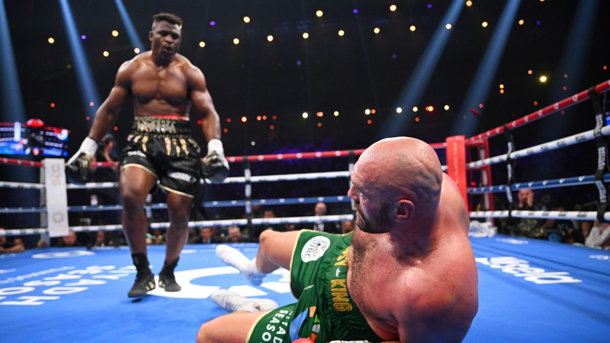
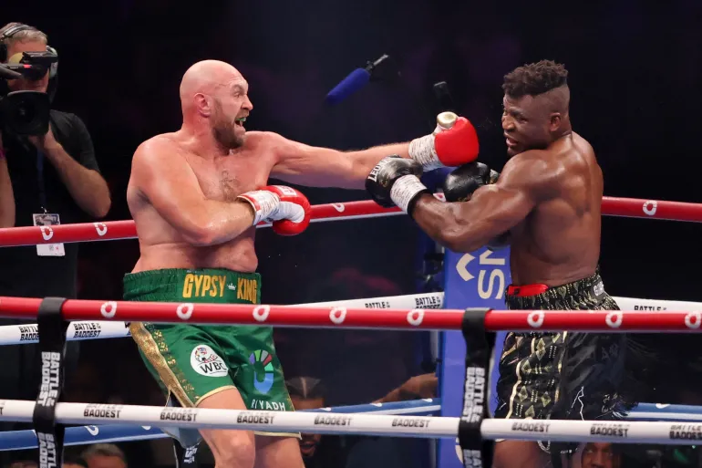
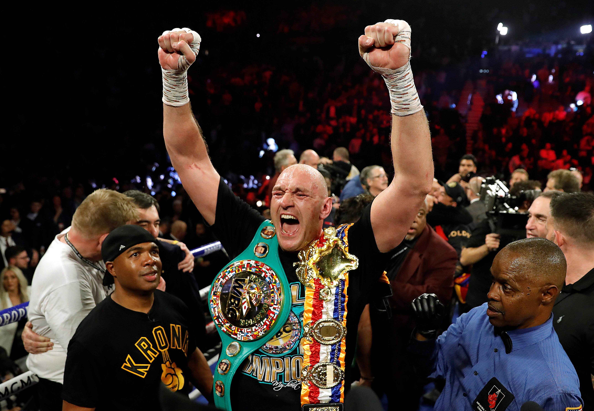

How Tyson Fury survived a stunning Francis Ngannou knockdown in controversial split decision win
Oct 30 | Ameer Moustafa"Former UFC champion Ngannou put Fury on the canvas in round three only to lose the crossover fight on points"
Tyson Fury was forced to get up off the canvas as he claimed an incredibly controversial split decision victory over former UFC champion Francis Ngannou in Saudi Arabia.
Ngannou, making his professional boxing debut, took Fury the distance and put his opponent on the canvas in round three after connecting with a left hook.
Fury, the WBC heavyweight champion of the world, was able to recover but ended the fight with a cut forehead, as well as a small mark underneath his left eye.
But while one judge scored it 95-94 in favour of the boxing novice Ngannou, two gave it to Fury at 96-93 and 95-94, preserving his undefeated record.
“That definitely wasn't in the script,” Fury said immediately afterwards. “Francis is a hell of a fighter, strong, a big puncher and a lot better boxer than we all thought he would ever be.”
Fury’s victory means he will next face the WBA, IBF and WBO champion Oleksandr Usyk, with both men attempting to become the first heavyweight since Lennox Lewis to hold the undisputed championship.
What did Tyson Fury say after his controversial victory?
“That definitely wasn’t in the script,” Fury said afterwards. “He’s a hell of a figher and a hell of a lot better boxer than we thought he would be. He’s an awkward man and a good puncher and I respect him a lot.
“He was very awkward, he wasn’t coming forward and was waiting for me to throw. He’s given me one of my toughest fights of the last ten years.”
When asked about the knockdown he replies: “I was caught behind the head for the knockdown. I got back up and got back to my boxing.
“I don’t know how close it was. I got the win and that’s what it is.”
There has — somewhat predictably — been a very mixed reaction to Tyson Fury’s split decision victory. A lot of current and former professional boxers have argued Fury edged it. But just about every MMA fighter and analyst has said Francis Ngannou was robbed.
The British former IBO super-middleweight world champion Chris Eubank Jnr. is one of those to have broken ranks. He scored the fight in Ngannou’s favour.
“Watching from ringside I thought Ngannou won the fight. It was close but he was the aggressor, landed heavier shots & scored a knockdown,” he wrote on Twitter.
“Fury deserved to lose after having so much trouble against a man who has never boxed before… too much time filming Netflix specials not enough time in the gym I’m guessing. Unlucky Francis.”
A mixed reaction to Fury’s split decision victory
Tyson Fury vs Francis Ngannou — full fight card results

- Tyson Fury bts Francis Ngannou via split decision (heavyweight)
- Fabio Wardley bts David Adeleye R7 TKO (heavyweight)
- Joseph Parker bts Simon Kean via R3 KO (heavyweight)
- Arslanbek Makhmudov bts Junior Anthony Wright via R1 TKO (heavyweight)
- Moses Itauma bts Istvan Bernath via R1 TKO (heavyweight)
- Martin Bakole bts Carlos Takam via R4 TKO (heavyweight)
- Jack McGann bts Roberto Duran Jr via R2 TKO (super-welterweight)